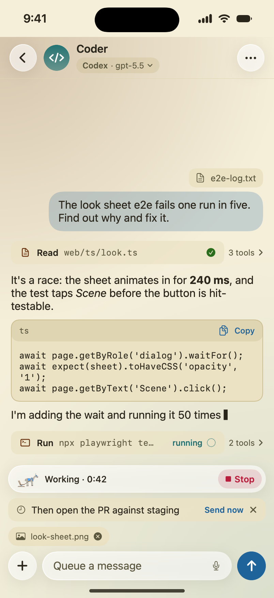
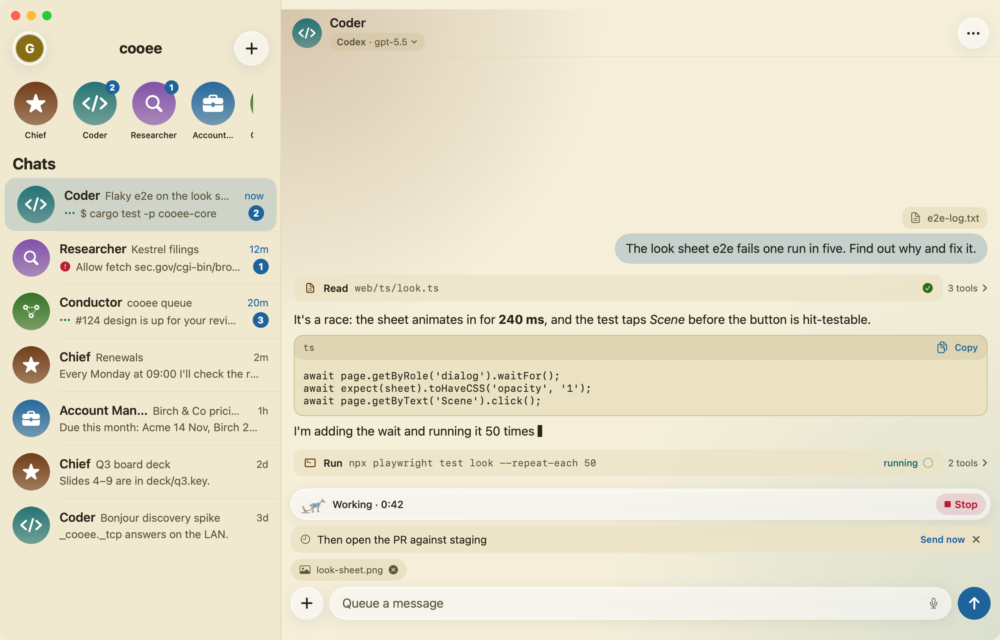

Chat, drawn from /screens/chat/k3
The same turn as today's chat-streaming frame, built as #714's chat screen (fixtures/chat.json) and drawn by blocks' own kinds in cooee's Modern palette. cooee keeps its bar; everything under it is BlocksView.
Today · native ChatScreen, iPhone

After · BlocksView, iPhone
Today · native ChatScreen, Mac

After · BlocksView, Mac (the sidebar is the sessions screen, see Sessions)